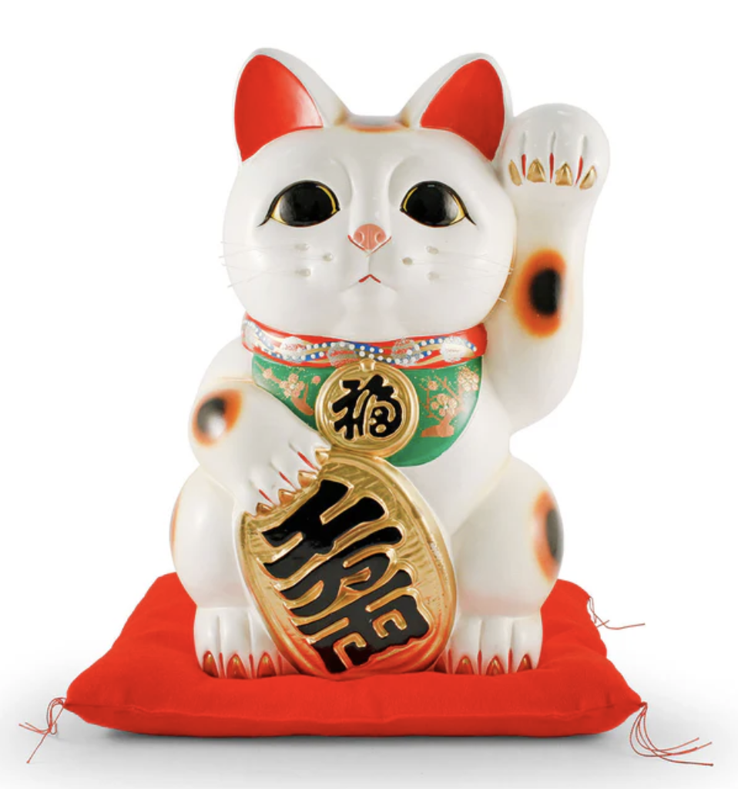

- white
- black
- red
- gold
The maneki-neko is a common Japanese figurine which is often believed to bring good luck to the owner. In modern times, they are usually made of ceramic or plastic. The figurine depicts a cat, traditionally a calico Japanese Bobtail, with a paw raised in a beckoning gesture. The figurines are often displayed in shops, restaurants, pachinko parlors, dry cleaners, laundromats, bars, casinos, hotels, nightclubs, and other businesses, generally near the entrance,[1] as well as households.[2] Some maneki-neko are equipped with a mechanical paw that slowly moves back and forth.
